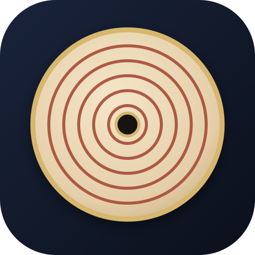

FoundationSource + modern explanation
String length and pitch
Objective: understand why shorter sounding length produces higher pitch.

Landscape view is required to display the complete monochord clearly.
A scholarly interactive edition
Explore al-Urmawī’s exact fret divisions, intervals, and modal theory.
The whole sounding string is normalized to 1. If the remaining sounding length is ℓ, the ideal frequency ratio is its reciprocal.
The 18 written points represent the open string, 17 pitch positions within the octave, and the octave repetition. They form a parent pitch lattice, not a single mandatory performance scale.
Normalize the complete sounding length to 1. This is the reference tone.
The ratios are exact. The explanatory English is a cautious pedagogical paraphrase of the supplied diagrams and instructions.
For theoretical comparison, a sine wave makes beating and interval size easier to hear. The sound is a modern synthesis, not a reconstruction of a medieval instrument timbre.
| # | Label | String length | Frequency ratio | Cents | Hz | Previous step |
|---|
Persian Music Scales · Historical Theory Series
A multilingual digital-humanities application for exploring exact string divisions, interval structures, listening models, and modal categories.
Dr. Pouya Hosseini
Researcher, independent developer, and creator of Persian Music Scales.
Version 4.2.0 · PWA Edition
Use your browser menu and choose “Install app” or “Add to Home Screen”.
The project anchors fret division in Kitāb al-Adwār, Section Two, ff. 3v–5r, and interval ratios in Section Three, ff. 5r–8r. Modal combinations are treated in Section Six, ff. 11r–18r; lute tuning and derivation occur in Section Eight, ff. 18v–19v.
The click-by-click construction sequence, modern prose, synthesized sound, and four-string instrument drawing are pedagogical interpretations. They are not a diplomatic transcription, a claim about one unique historical performance tuning, or a reconstruction of a specific surviving instrument.
The conventional 3-limit reading is retained as a transparent analytical model. Owen Wright’s work remains a major modern framework for the Systematist tradition. Recent scholarship also stresses that categorical interval names and practical intonation should not be treated as universally fixed cent values.
The English, Persian, Arabic, and Turkish interfaces have been harmonized for consistency in this build. Historical terminology still deserves specialist native-speaker and philological review before formal publication.